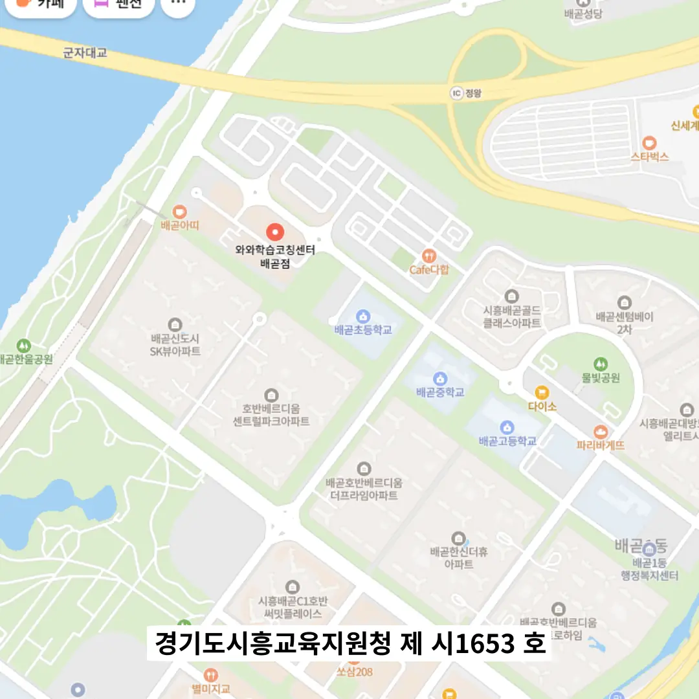

배곧동 수시학원
배곧동 수시학원
많은 학생이 ‘아무리 해도 끝이 안 난다’는 피로감을 느낄 때가 있는데, 이는 진도 위주의 학습에서 비롯된 현상으로, 특정 시험 커리큘럼과 연계되지 않은 내용을 계속 소화하려는 시도에서 발생한다. 배곧동 수시학원은 개념을 배운 후 ‘이 이론이 우리 집 냉장고의 작동 원리와 어떻게 연결될까’, ‘우리 동네 정치 상황에 이 역사 사건을 적용하면 어떤 점이 다를까’처럼 실제 상황에 적용 가능한 예를 5개 이상 목록화하는 연습을 꾸준히 하자. 배곧동 수시학원은 이런 방식은 단순한 반복을 넘어서 아이가 주도적으로 사고를 전개하게 함으로써, 학습의 질을 근본적으로 변화시킨다. 실제 학습 과정에서, 맞춤형 학습이 중요합니다. 과학 예상문제 요약본을 복습한 뒤 기출 적중률을 90%까지 끌어올리는 목표를 설정하고, 문장마다 단어 하나를 기준으로 연결하는 체인형 구조를 활용해 개념 간 연계를 강화한다. 이처럼 물리적 환경도 학습 성과에 직접적인 영향을 미는데, 교실 내 습도 조절기가 설치되어 있어 공기 상태가 항상 일정하게 유지되면, 두뇌 피로도가 감소하고 집중력 유지 시간이 연장된다. 이러한 환경 속에서 특정 과목, 예를 들어 중학교 2학년 수학에서 교재는 잘 풀지만 반복적으로 계산 실수를 하는 학생의 사례를 고려해보자.